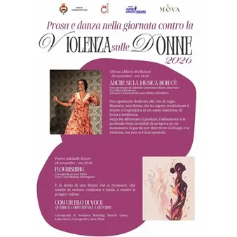

da gio 26 nov a sab 28 nov
Prosa e danza nella Giornata contro la violenza sulle donne
Spettacoli di prosa e danza a cura di MŌVA Danze e Centro Danza Isadora a Cividale del Friuli
 Indicazioni
Indicazioni
- Costi e prenotazioni
- Costo non indicato · Prenotazione non indicata
- Programma
- Programma da verificare. Apri la fonte ufficiale per orari e possibili aggiornamenti.
- In caso di maltempo
- Nessuna indicazione specifica pubblicata.
- Note
- Acquisito automaticamente dalla fonte.
L’EVENTO
Descrizione completa
Giovedì 26 novembre 2026 ore: 18:00
Chiesa di S.Maria dei Battuti
Anche se la musica non c’è
Storia di Argia Manarin
Anche se la musica non c’è è uno spettacolo dedicato alla vita di Argia Manarin, una donna che ha saputo trasformare il dolore e l’ingiustizia in un canto silenzioso di forza e resilienza. Argia ha affrontato il giudizio, l’abbandono e le profonde ferite invisibili di un’epoca in cui mancavano le parole per descrivere il disagio e la violenza, ma non si è mai spezzata. La sua storia racconta la capacità straordinaria di resistere, anche quando la vita sembra toglierti ogni melodia.
Attraverso l’interpretazione di Marta Riservato, che rende omaggio alla vita di sua nonna, lo spettacolo conduce il pubblico in un viaggio intimo e toccante, rivelando una figura forte e appassionata. Nata a Valvasone nel 1924, Argia ha vissuto le difficoltà del XX secolo friulano, combattendo contro la miseria e superando le tragedie della guerra e della perdita.
Una creazione di Gabriele Genovese e Marta Riservato
con Marta Riservato
costumi ed elementi di scena di Elettra Del Mistro
produzione: Associazione Culturale CAVE e Centro Teatrale Umbro
Sabato 28 novembre 2026 ore 20:45
Teatro Adelaide Ristori
Centro Danza Isadora e MOVA presentano:
Flourishing
Coreografia di Sara Pittia
Voce e testi Melany Sferragatta
Ho iniziato a fiorire, coreografia Veronica Martinig e Patrick Laera
Laboratorio coreografico Sara Pittia
Flourishing invita a una rivoluzione intima: a guardare dentro, a riscoprire la propria voce, il proprio passo, la propria verità.
Ci sono domande che bruciano piano, come un sussurro nell’ombra: Chi sono? Chi desidero diventare? È una chiamata a liberare la fiamma interna, a danzare con la vulnerabilità e ad abbracciare il nuovo con audacia. Qui la sofferenza non è un nemico da evitare, ma un ponte verso la profondità dell’essere. Immagina un luogo dove tutti siamo un’unica entità, perfetta nella sua omologazione.
Che cosa ne sarebbe della bellezza dell’unicità?
Flourishing ci mostra che la diversità è linfa vitale: un invito a scoprire chi siamo oltre le maschere, oltre le abitudini e i percorsi già tracciati. In questa danza di scoperta, ogni caduta, ogni esitazione e ogni ritorno sui propri passi diventano parte di un poema corporeo.
È la storia di una donna che si riconosce, che smette di cercare conferme e inizia a sentire il proprio valore. Una donna che si guarda dentro e si sceglie, con forza e dolcezza insieme. Scopre di non essere solo ciò che appare: è voce, è desiderio, è luce che cresce, è cuore che pulsa senza più trattenersi. Nel silenzio di questa consapevolezza comprende di essere intera. E da quel momento cammina nel mondo senza chiedere il permesso di esistere.
Questo spettacolo nasce dalla collaborazione tra Sara e Melany, due ragazze che non si sono mai incontrate davvero, eppure capaci di riconoscersi tra le parole, le emozioni e l’arte. Tutto ha avuto inizio quando Manuela ha introdotto Flourishing, il libro di Melany, a Sara. Da quelle pagine è nato qualcosa che è andato oltre la lettura: un dialogo silenzioso, una visione condivisa, un viaggio trasformato in danza.
Ingresso libero e gratuito
Per maggiori informazioni: MŌVA Danze mail: info@movadance.it
IL PROGRAMMA
Programma e orari
Appuntamenti raccolti dalle fonti elencate. Dove manca un orario, non è ancora disponibile in questa scheda.
Programma pubblicato
- Dal 2026-11-26 al 2026-11-28
INFORMAZIONI UTILI
Prima di partire
- Controllare la fonte prima di partire.
ORGANIZZAZIONE